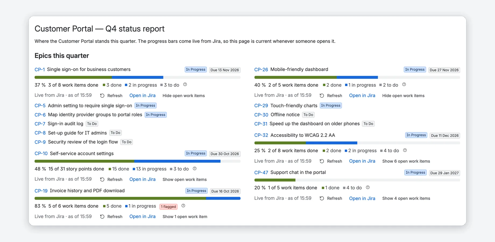
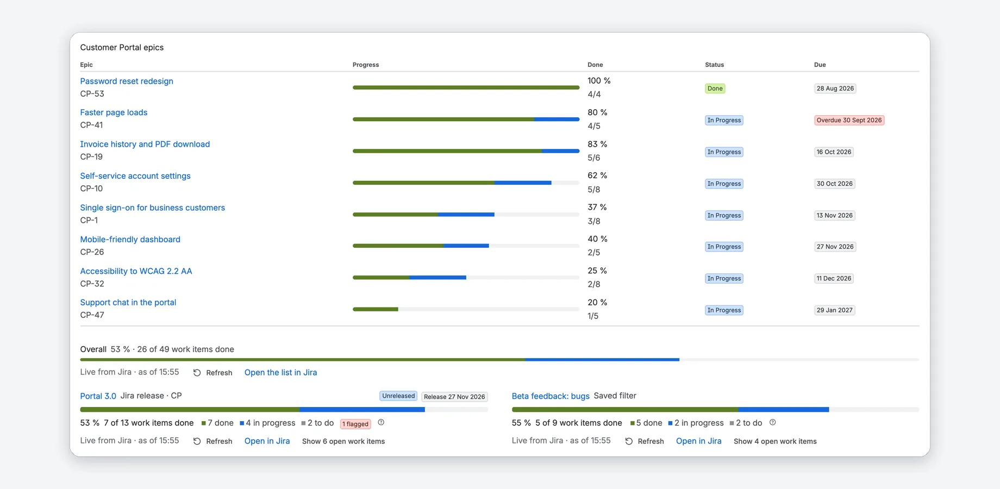
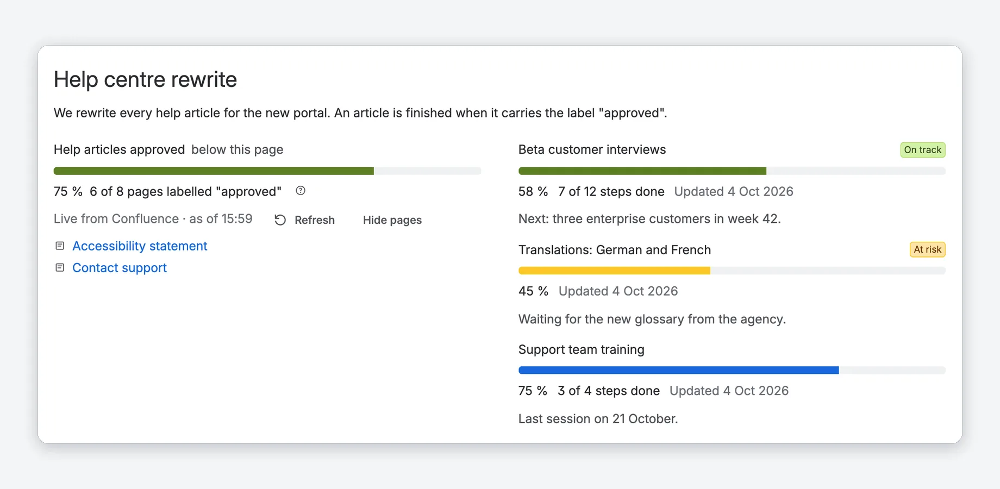
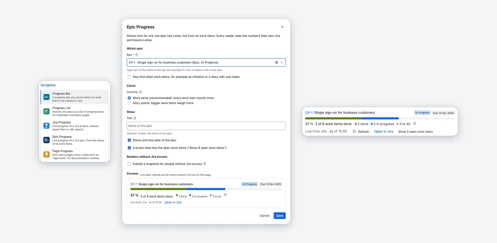
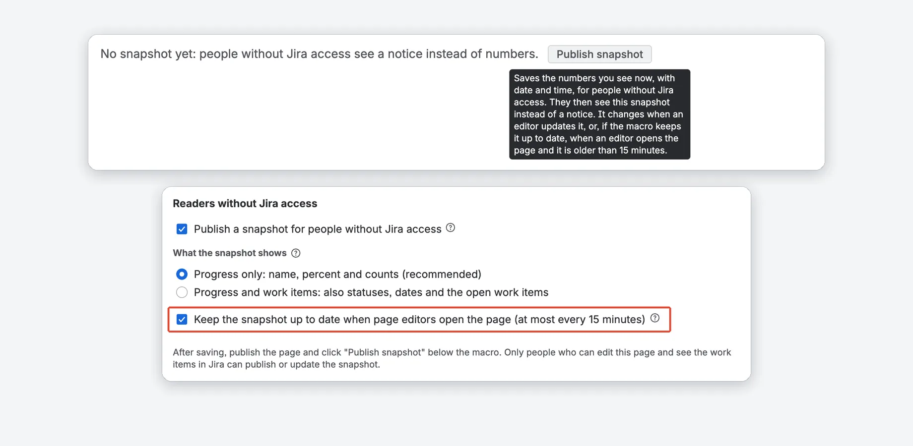
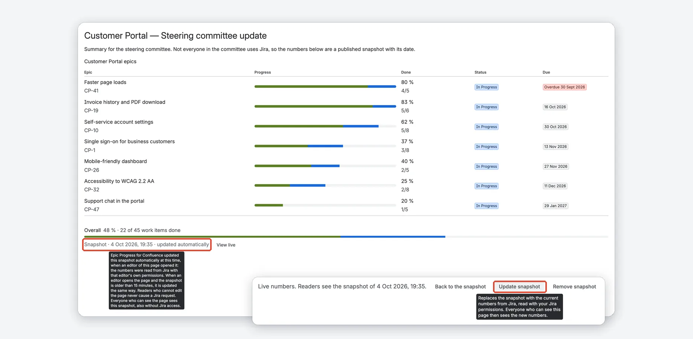
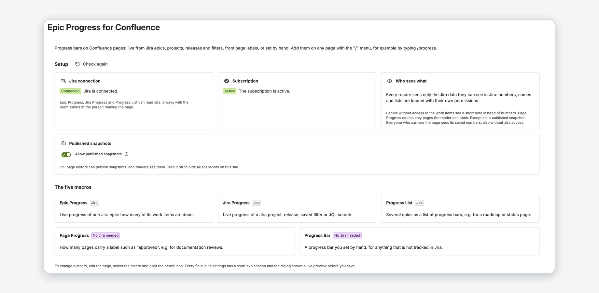

Epic Progress for Confluence — Documentation
Progress bars on Confluence pages: live from Jira epics, projects, releases and filters, from page labels, or set by hand.
Quick start
- A Confluence admin installs the app once from the Atlassian Marketplace.
- For the Jira macros, a site admin connects Jira in Atlassian Administration: Apps → Epic Progress for Confluence → connect to Jira. Progress Bar and Page Progress work without it.
- Edit a page, type /progress and choose one of the five macros.
- Fill in the fields marked *, check the live preview, click Save and publish the page.
- Readers without Jira access? Tick Publish a snapshot for people without Jira access in the macro settings, publish the page and click Publish snapshot below the macro (details).
On this page
What it does
Epic Progress for Confluence adds five macros to Confluence pages. Three of them show progress live from Jira; two work without Jira.
| Macro | Shows | Source |
|---|---|---|
| Epic Progress | One epic: how many of its work items are done | Jira |
| Jira Progress | A project, a release (fix version), a saved filter or a JQL search | Jira |
| Progress List | Several epics as a list of progress bars, with an overall row | Jira |
| Page Progress | How many pages carry a label such as approved | No Jira needed |
| Progress Bar | A bar you set by hand | No Jira needed |

How the Jira macros count
- Colored like in Jira. Each work item counts by the status category of its status: green is done, blue in progress, gray to do. So the numbers match Jira's own progress display. There is no red or yellow by percent: 30 % can be perfectly on track.
- Every percent with its base: “50 % · 4 of 8 work items done” and a legend “4 done · 2 in progress · 2 to do”. Where it applies, the macro adds “1 flagged” and “3 work items without estimate”.
- Work items or story points. Work items counts every work item once (recommended). Story points adds up the estimates, so a big story weighs more than a small one. Both the “Story Points” field (company-managed projects) and “Story point estimate” (team-managed projects) work.
- Footer. “Live from Jira · as of 14:05”: the numbers were loaded when the page opened, with your own permissions. Refresh loads them again; Open in Jira opens exactly these work items in Jira's search.
Rounding and very large searches
- Honest numbers. 100 % only when everything is done (199 of 200 is 99 %). Something done, but less than 1 %, shows “<1 %” instead of 0 %.
- Very large searches. For big searches Jira returns an approximate count; the macro then says “about …” and never shows 100 % while Jira still counts open work items.
Setup
Install the app, connect Jira if you want the Jira macros, then add a macro to a page.
1. Install the app in Confluence
A Confluence admin installs Epic Progress for Confluence once from the Atlassian Marketplace. The app is installed in Confluence, not in Jira. Right after the installation, Confluence offers the app's Get started page, which is the admin page: it shows whether Jira is connected and what to do next.
2. Connect Jira (optional)
Epic Progress, Jira Progress and Progress List read Jira. A site admin connects the app to Jira in Atlassian Administration: Apps → Epic Progress for Confluence → connect to Jira. Jira must be on the same site as Confluence. Until then, Progress Bar and Page Progress already work, and the Jira macros show readers a short note that Jira is not connected yet.
3. Add a macro to a page
- Edit a page and type /progress (or the name of a macro, for example /epic).
- Choose one of the five macros. Its settings dialog opens.
- Fill in the fields marked *. The preview shows the macro with live data.
- Click Save, then publish the page.
To change a macro later, edit the page, select the macro and click the pencil icon.
“Allow access”: once per person
The first time someone opens a page with one of the macros, Confluence shows this instead of the macro: a notice that the app needs access to Atlassian apps on your behalf, with an Allow access button.
- This is Atlassian's standard consent for apps that read data with the permissions of the person using them: the app reads Jira and Confluence as you, with your permissions.
- Each person answers it once. After that, the macros load as usual.
- It also appears for readers who only see a published snapshot: Confluence asks before it shows any macro of the app, even if that macro then makes no request to Jira.
- Allowing access changes nothing in Jira or Confluence. The app has no write access.
The five macros
All five share the same look and one settings dialog. Every setting has a short explanation in the dialog itself (the (?) icon), so the setting tables below are folded away.
Epic Progress Jira
Live progress of one Jira epic, from the status of its work items: the epic's key as a link, its name, the bar, “4 of 8 work items done” and the legend. It counts the work items directly under the epic, like Jira's own child-issue progress.
Settings of Epic Progress
| Setting | What it does |
|---|---|
| Epic * | Type part of the name or the key (for example PL-42), or paste a link to the epic. The macro counts the work items directly under this epic, like Jira's own child-issue progress. |
| Also find other work items | Lets the search find other parents too, for example an initiative or a story with sub-tasks. |
| Count by | Work items (recommended) or Story points. Work items without an estimate are shown separately. |
| Title | Optional. Empty: the name of the epic. |
| Status and due date of the epic | Shows the epic's status and its due date; hovering the date shows “in 12 days” or “4 days ago”. A passed due date turns red (“Overdue”) while the epic is not done. |
| A button that lists the open work items | “Show 8 open work items” opens a list of up to 25 open work items with key, title, status and assignee, plus “Show all in Jira”. |
| Publish a snapshot for people without Jira access | See Snapshots. |
Jira Progress Jira
Live progress of a Jira project, a release (fix version), a saved filter or a JQL search. The name links to the project, the release page or the filter; a JQL search shows the query itself. Releases show Released or Unreleased and the release date, in red once an unreleased release has passed its date.
Sub-tasks are left out by default for projects and releases, so a story and its sub-tasks do not count twice, and are counted for filters and JQL, so the number matches the filter exactly.
Settings of Jira Progress
| Setting | What it does |
|---|---|
| What to count | A project, A release (fix version), A saved filter or A JQL search (for experts). |
| Project * | All work items of this project are counted. |
| Project of the release * and Release * | First the project, then one of its releases. Unreleased versions are listed first. |
| Saved filter * | Your starred filters are listed first; type to search all filters you can see. Readers need permission to see the filter in Jira, otherwise the macro tells them it is not shared with them. |
| JQL * | Any JQL that works in Jira's search, up to 2,000 characters. Each reader runs it with their own Jira permissions. A sort order (ORDER BY) is ignored. Tip: build the search in Jira first, then copy the JQL here. |
| Leave out sub-tasks | On by default for projects and releases (otherwise a story and its sub-tasks count separately), off for filters and JQL, so the number matches the filter exactly. |
| Count by | Work items or Story points. Story points work for up to 2,000 work items. |
| Title | Optional. Empty: the name of the project, release or filter. |
| A button that lists the open work items | As in Epic Progress. |
| Publish a snapshot for people without Jira access | See Snapshots. |
Progress List Jira
Several epics as a list of progress bars, for roadmaps and status pages. Each row shows the epic's name (as a link) and key, its bar, the share done (“4/8” or “19/34 pts”), its status and due date. Pick the epics yourself, list all epics of a project or the children of a work item, or use a JQL search.

Settings and limits of Progress List
| Setting | What it does |
|---|---|
| Which epics | Epics I choose (up to 20, in the order you add them), All epics of a project (in Jira's rank order), The children of a work item (for example the epics of an initiative) or Work items from a JQL search (each result becomes a row, its children are counted, the order of your JQL is kept). |
| Include epics that are already done | For All epics of a project and The children of a work item. |
| Count by | Work items or Story points. |
| Title | Optional, shown above the list. |
| Order | As chosen (or in Jira's order), Least progress first (the epics that need attention at the top) or Earliest due date first. |
| An overall row below the list | “Overall 61 % · 8 of 13 work items done” with its own bar and “Open the list in Jira”. |
| Publish a snapshot for people without Jira access | See Snapshots. |
A list shows up to 20 rows. With more results, it says so; narrow the selection or open the list in Jira. A row the reader cannot see in Jira says “Not found, or you cannot see it in Jira”; the other rows and the overall row stay. Epics are the work item type one level above stories, also when your site renamed them (for example “Feature”).
Page Progress No Jira needed
How many pages carry a label, for example how many pages of a manual are approved: “75 % · 3 of 4 pages labelled “approved””. Pages a reader cannot open are not counted for them.
Settings of Page Progress
| Setting | What it does |
|---|---|
| Which pages | Pages below this page (all levels), All pages in this space or All pages in another space (only spaces you can open are listed). |
| “Done” label * | A page counts as done when it has this label. Confluence labels are lower case without spaces, so “Approved” counts pages labelled approved. |
| Only count pages with this label | Optional, for example doc, to leave out meeting notes. Empty: all pages in scope count. |
| Title | Optional. Empty: Pages labelled “approved”. |
| A button that lists the pages without the label | “Show 1 page without “approved”” lists them as links. |
Add labels at the bottom of a page or with the label icon in the page header. A new label can take a few seconds to show up in Confluence search; click Refresh.
Progress Bar No Jira needed
A progress bar you set by hand, for work that is not tracked in Jira: a migration, a hiring plan, a checklist. You choose its status color; the bar does not guess it from the number.

Settings of Progress Bar
| Setting | What it does |
|---|---|
| Progress | As a percentage (0 to 100, decimals allowed; the bar shows whole percent) or As steps, for example 3 of 5 milestones (Steps done and Total steps). |
| Title | Optional, shown above the bar. |
| Status colour | Automatic (blue, green when it reaches 100 %), On track (green), At risk (yellow), Off track (red) or Neutral (blue, no status label). You decide the status; the bar does not guess it from the number. |
| Note under the bar | Optional, for example “Next milestone: beta on 15 November”. |
| Show when the value was last changed | “Updated 4 Oct 2026”. The date changes only when the value changes, so readers know how fresh it is. |
The settings dialog
Every macro has one settings dialog. It opens when you add a macro; later, edit the page, select the macro and click the pencil icon.
- Every field has a (?) icon with a tooltip and a hint below it. Required fields are marked *.
- Search pickers find epics, projects, releases, filters and spaces by name. In the epic search you can also paste a link to the work item.
- Save checks the settings first and names the fields that are missing; the dialog stays open.
- The preview shows the macro exactly as it will look on the page, with live data loaded with your permissions. After saving, publish the page to show the change to readers.

Snapshots for readers without Jira access
Epic Progress, Jira Progress and Progress List can show a dated snapshot to people who cannot open Jira, for example managers or stakeholders who only read Confluence. An editor with Jira access publishes it with one click, and editors' visits keep its numbers current.
How to publish a snapshot
- Edit the page, open the macro's settings and tick Publish a snapshot for people without Jira access (section Snapshots for readers without Jira access).
- Choose What the snapshot shows: Progress only (recommended) or Progress and work items.
- Leave Keep the snapshot up to date when page editors open the page (at most every 15 minutes) ticked, or untick it to keep the snapshot as it is until someone clicks Update snapshot.
- Save and publish the page.
- Below the macro, click Publish snapshot.

Readers then see the bar with “Snapshot · date and time · published”, or “… · updated automatically” after an editor's visit updated it. Once a snapshot is older than 14 days, this line turns yellow and shows its age, for example “18 days old”. Snapshots work on pages, not on blog posts or templates.

Why does publishing take a click, and when does a snapshot update itself?
Epic Progress for Confluence reads Jira with the permissions of the person who looks at the page, so people without Jira access would see no numbers. A snapshot closes that gap: someone who can edit the page and see the work items in Jira decides, with one click, to share the current numbers on that page. It is what copying the numbers into the page would do, only dated and removable.
After that, the people who edit the page keep it up to date: when one of them opens the page and the snapshot is older than 15 minutes, the app reads the numbers again from Jira with that person's own permissions. Reading a snapshot never causes a Jira request; View live reads Jira with the reader's own permissions. The app never reads Jira with its own account or in the name of someone who is not there, as Atlassian asks of apps (Forge shared responsibility model).
Details of the automatic update
- The page does not wait for it: the stored snapshot appears at once, and the new numbers a moment later.
- Automatic updates refresh the numbers of what an editor published; new epics, work items or names appear only when an editor updates the snapshot by hand, and the epics of a list stay the same until then.
- If Jira shows new epics or work items, editors see the note “New epics or work items in Jira since this snapshot. Update it to show them.” If an epic of the snapshot is no longer in Jira (deleted, or not visible to that editor), the note says “An epic or work item in this snapshot can't be read in Jira anymore. Update the snapshot to refresh it.”
- If a request to Jira fails during an update, the snapshot stays as it was. Only one update runs per macro at a time, and a removal always wins: a snapshot removed while an automatic update is still running stays removed.
- The numbers reach readers only through editors who can read Jira themselves. Without an editor's visit the snapshot stays as it is: its date shows how fresh it is, and after 14 days it turns yellow with its age.
- To keep a snapshot unchanged until someone clicks Update snapshot, untick Keep the snapshot up to date when page editors open the page in the macro settings.
Who can publish, update or remove a snapshot?
People who can edit the page. Publishing and updating also need access to the work items in Jira, because the app reads them with that person's permissions; the automatic update works the same way and runs only when such a person opens the page. Editors find Update snapshot and Remove snapshot after clicking View live.
If the live numbers cannot load, for example because an editor has no Jira access any more, Remove snapshot is still there: removing needs edit permission on the page only, no Jira access and no active subscription. Confluence administrators can turn snapshots off for the whole site: Confluence settings → Epic Progress for Confluence → Allow published snapshots (see Admin page).
Who sees what?
- Everyone who can see the page sees the snapshot, with its date and time and whether it was “published” or “updated automatically”. Confluence decides who can see the page, and the app asks Confluence again, with the reader's permissions, each time before it shows a snapshot. Someone who may no longer view the page gets a neutral notice instead.
- View live shows the current numbers, loaded with the reader's own Jira permissions, for people with access to the work items. Back to the snapshot shows the page as other readers see it. Someone without any access to Jira keeps the snapshot on the page, with the note “Live numbers need access to Jira”.
- Only an editor's visit can update a snapshot, at most every 15 minutes, with that editor's Jira permissions; without Jira access the snapshot simply stays as it is.
- Like everyone else, readers of a snapshot answer the one-time “Allow access” question first.
- The macros are for licensed users of your Confluence site. Confluence guests and anonymous visitors of public pages do not see the app's macros, snapshots included.
What is in a snapshot?
You choose per macro in its settings:
- Progress only (default): percent and counts, with the key and name of what is measured: the epic, the project, the release or saved filter, or the epics of a list. A JQL search has no name, and its text is never stored.
- Progress and work items: also statuses, due dates, the release date, and up to 25 open work items with key, title and status.
A snapshot keeps no person fields: no assignees and no account IDs, not even of the person who published it, and never the JQL text. Titles and names are kept as your team wrote them in Jira. If someone changes the macro settings, the old snapshot is no longer shown until it is published again.
Why no account IDs, and what about names in titles?
Account IDs in app storage would come with reporting duties under Atlassian's privacy rules (User privacy guide for app developers); snapshots store none. If the title of an epic or the name of a release contains a person's name, for example “Interview with Anna Müller”, the snapshot shows it. The person who publishes decides what to share, as when copying numbers into the page, and editors can remove a snapshot at any time.
Where is the data stored, and how is it deleted?
In the app's storage on Atlassian's cloud (Forge storage), not in the page. So a snapshot is not part of the page history and is not copied with the page. Forge storage stays in the data residency location of your Confluence site.
When a snapshot is deleted
- Someone publishes a newer one (it replaces the old one).
- An editor clicks Remove snapshot (deleted at once).
- The page is moved to the trash or deleted: a daily cleanup deletes its snapshots within 24 hours. If the page is restored before that, the snapshot stays; otherwise publish it again.
- An editor opens the published page with Publish a snapshot turned off in the macro settings: turning it off means removing it (not while the page is being edited).
- An admin blocks the app from the page with an app access rule: the daily cleanup deletes its snapshots within 24 hours.
- Nobody opened its macro for 120 days, for example because the macro was removed from the page, or the page is no longer read (this also covers pages whose view restrictions keep the app itself from reading them): the daily cleanup deletes it. For this, the app keeps one small note per macro with the day it was last opened: a date only, no person.
After you uninstall the app, Atlassian keeps its storage, snapshots included, for 28 days and then deletes it; within 21 days you can ask us to have it restored to a new installation (Data lifecycle for Forge-hosted storage).
Permissions: who sees what
The app reads Jira and Confluence as the person who looks at the page, never with a shared app account, and it has no write access to either.
| Action | Who |
|---|---|
| Install the app | A Confluence admin, once, from the Atlassian Marketplace. |
| Connect Jira | A site admin, in Atlassian Administration. Jira must be on the same site. |
| Add or change a macro | Anyone who can edit the page. |
| See live numbers | Every reader, with their own permissions, on every page view. Jira and Confluence apply them, including issue security and page restrictions. People without access to the work items see a short note, never numbers or names. |
| Publish or update a snapshot | Editors of the page who can see the work items in Jira. |
| Remove a snapshot | Editors of the page, also without Jira access or an active subscription. |
| See a snapshot | Everyone who can see the page (licensed users of your Confluence site). |
| Turn snapshots off for the site | A Confluence admin, on the admin page. The app checks with Confluence, as that person, that they are a Confluence administrator. |
The app uses its own app account for two yes/no questions only: on the admin page, whether Jira is connected, and in the daily cleanup, whether a page with a snapshot still exists. Neither shows Jira or Confluence data to anyone. Details: Security Policy.
Admin page
In Confluence, open Settings and choose Epic Progress for Confluence in the left navigation. The same page is the app's Get started page after the installation.
- Jira connection: Connected, or Not connected with the steps to connect it.
- Subscription: Trial (with its end date), Active or Not active.
- Who sees what: the permission rules above in two sentences.
- Published snapshots: the switch Allow published snapshots, on by default. Only Confluence administrators can change it: each time, the app checks this with Confluence, as the person changing it.
- The five macros, each marked Jira or No Jira needed.
Check again next to Setup checks the subscription and the Jira connection again.
What “Allow published snapshots” off does
Snapshots are hidden on the whole site and are neither published nor updated automatically; the macros show live numbers to people with Jira access and a notice to everyone else. Existing snapshots are kept (until an editor removes them, the daily cleanup deletes them with their page, or nobody opens their macro for 120 days) and come back when you turn it on again.

Deleting snapshots and app data
The app keeps very little, all of it in Atlassian's Forge storage. The macro settings (for example the chosen epic, a JQL search, a title or a note) are part of the page and stored by Confluence, like any other page content: they go with the macro or the page and follow Confluence's page history.
What the app stores and when it is deleted
| Data | Deleted |
|---|---|
| Published snapshots | At once when replaced by a newer snapshot, removed by an editor, or when an editor opens the published page with the snapshot option turned off. By the daily cleanup within 24 hours after the page goes to the trash or is deleted (a page restored before that keeps its snapshot), or after an app access rule blocks the app; and when nobody opened its macro for 120 days. |
| Notes of the automatic update: when a snapshot was last checked, and a one-minute claim while an update runs (a random ID, a time and, after a removal, a removal mark; no person) | Together with their snapshot; a claim left over is deleted by the daily cleanup. |
| “Last opened” note of a macro with a snapshot (date only, no person) | Together with the snapshot, or by the daily cleanup once the macro has no snapshot any more. |
| The admin switch “Allow published snapshots” | 28 days after the app is uninstalled. |
| Anonymous daily usage counters | After 8 days. |
| IDs of the site's story point fields (cache) | Refreshed every 6 hours while in use; deleted 28 days after the app is uninstalled. |
After you uninstall the app, Atlassian keeps all of the app's storage, snapshots included, for 28 days and then deletes it under its retention rules. Within 21 days of the uninstall, you can ask us to have it restored to a new installation. Details: Privacy Policy.
PDF and Word export
PDF and Word exports and the page history show each macro as text: the same numbers as on the page, a Progress List as a table with its overall row. They are read live as the person who exports, with that person's permissions; an export never uses an app account and never contains a snapshot. If someone has not answered “Allow access” yet, their export shows a neutral line instead of numbers: open the page once, allow access, and export again.
FAQ and messages
Short answers to common questions, then the app's messages and what to do about them.
Do readers need Jira access?
For live numbers, yes: every reader sees the numbers their own Jira permissions allow. For readers without Jira access, an editor of the page can publish a dated snapshot that everyone who can see the page sees. Progress Bar and Page Progress need no Jira at all.
Why does Confluence ask me to Allow access?
Forge apps that read data with the permissions of the person using them need each person's consent once. The first time someone opens a page with one of the macros, Confluence asks them to allow access. This also applies to readers who only see a published snapshot. Allowing access changes nothing in Jira or Confluence.
Why does the number differ from my search in Jira?
Epic Progress counts the work items directly under the epic. Jira Progress leaves out sub-tasks for projects and releases unless you untick Leave out sub-tasks. And every reader sees only the work items they may see in Jira.
Why 99 % when almost everything is done?
100 % means every work item is done. One open item in 200 shows 99 %.
Can Confluence guests or anonymous visitors see the macros?
No. Forge apps run for licensed users of a site unless an app is set up for guests and anonymous visitors, and this app is not.
Which Jira projects work?
Company-managed and team-managed projects, including their story point fields. Epics are found by their level in the work item hierarchy, also when your site renamed them.
Every message of the app names what happened, why, and what to do.
Messages and what to do
“Live numbers need access to Jira”
You clicked View live, but your account has no access to Jira on this site. The page keeps showing the published snapshot. If you need the live numbers, ask your Jira admin for access.
“This progress comes from Jira, which you cannot open”
Your account has no access to Jira on this site. Ask your Jira admin for access, or ask an editor of the page to publish a snapshot.
“Epic Progress for Confluence is not connected to Jira yet”
The app is installed in Confluence but cannot read Jira yet. A site admin connects it in Atlassian Administration: Apps → Epic Progress for Confluence → connect to Jira (details). Progress Bar and Page Progress already work.
“Epic Progress cannot find the work item …”
The work item, project, release, filter or space does not exist, or you do not have permission to see it. Check the macro settings (pencil icon while editing the page), or ask your Jira admin for access. For a saved filter, ask its owner to share it with you.
“Jira cannot run the search of this …”
The JQL is not valid. The macro shows Jira's own explanation (for example “Field 'x' does not exist”). Correct the JQL in the macro settings; try it in Jira's search first.
“Too many work items for story points”
Story points are added up from every work item, and the search returns more than 2,000. Narrow the search, or count work items instead.
“Epic Progress for Confluence: the subscription is not active”
The trial or subscription has ended. A Confluence admin can start or renew it under Settings → Apps → Manage apps.
“The snapshot was published for other macro settings and is not shown”
Someone changed the macro settings after publishing. An editor who can see the work items in Jira publishes it again.
Support
Questions, bugs, feature requests → Support page · support@janekbehrens.de
See also: Overview · Privacy Policy · Security Policy · Terms of Service
Atlassian, Confluence and Jira are trademarks of Atlassian. Epic Progress for Confluence is an independent app by Janek Behrens and is not made or endorsed by Atlassian; the product names only say which products the app works with.